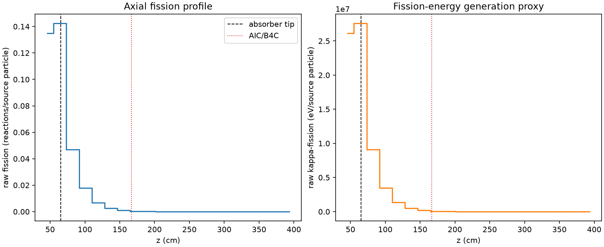
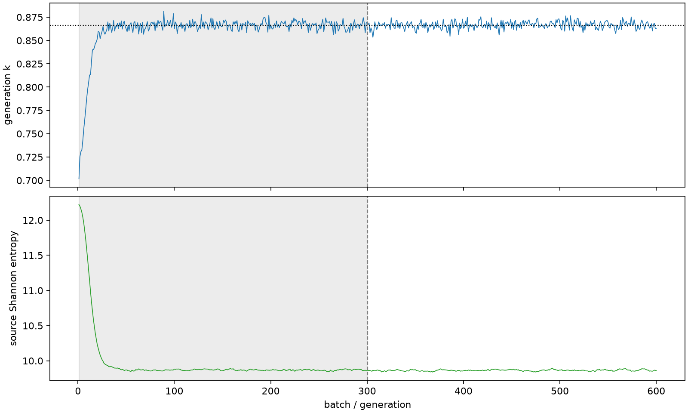

| field | value |
|---|---|
| experiment | V2-STAGE_32_OGRENCI_02-0005 |
| k | 0.8663167376705934 |
| MC standard error | 0.00016393220917616298 |
| seconds | 1127.660399294 |
| acceptance | not_assessed |
| convergence | review_required |
Completed is output integrity only; physical and statistical review required. Zero tallies do not prove zero production or zero uncertainty.
| diagnostic | value |
|---|---|
| geometric fuel voxels | 5280 |
| zero fission tally voxels | 1681 |
| low signal fuel voxels | 2866 |
| low signal fission share | 0.00013179917315244967 |
| low signal kappa share | 0.00013186373120206197 |
| important fission share | 0.9501257003182777 |
| previous filter included | 2414 |
| duration estimate s | 1562.5173488400023 |
| actual minus estimate s | -434.8569495460024 |
| fission relative MC error | statistics |
|---|---|
| all_geometric_fuel | {"voxels": 5280, "positive_mean_voxels": 3599, "zero_mean_voxels": 1681, "undefined_relative_error_voxels": 1681, "median": 0.04954773241339087, "p95": 0.9999999999999999, "maximum": 1.0000000000000002} |
| low_signal | {"voxels": 2866, "positive_mean_voxels": 1185, "zero_mean_voxels": 1681, "undefined_relative_error_voxels": 1681, "median": 0.5690557236753385, "p95": 1.0, "maximum": 1.0000000000000002} |
| important_95pct | {"voxels": 942, "positive_mean_voxels": 942, "zero_mean_voxels": 0, "undefined_relative_error_voxels": 0, "median": 0.004407487284394431, "p95": 0.01105504291493901, "maximum": 0.012459363375457723} |
| outside_previous_filter | {"voxels": 2866, "positive_mean_voxels": 1185, "zero_mean_voxels": 1681, "undefined_relative_error_voxels": 1681, "median": 0.5690557236753385, "p95": 1.0, "maximum": 1.0000000000000002} |
| kappa_fission relative MC error | statistics |
|---|---|
| all_geometric_fuel | {"voxels": 5280, "positive_mean_voxels": 3599, "zero_mean_voxels": 1681, "undefined_relative_error_voxels": 1681, "median": 0.04947454415544601, "p95": 0.9999999999999999, "maximum": 1.0000000000000002} |
| low_signal | {"voxels": 2866, "positive_mean_voxels": 1185, "zero_mean_voxels": 1681, "undefined_relative_error_voxels": 1681, "median": 0.5677169870942183, "p95": 1.0, "maximum": 1.0000000000000002} |
| important_95pct | {"voxels": 942, "positive_mean_voxels": 942, "zero_mean_voxels": 0, "undefined_relative_error_voxels": 0, "median": 0.004401333486263671, "p95": 0.011036176507602148, "maximum": 0.0124389400222825} |
| outside_previous_filter | {"voxels": 2866, "positive_mean_voxels": 1185, "zero_mean_voxels": 1681, "undefined_relative_error_voxels": 1681, "median": 0.5677169870942183, "p95": 1.0, "maximum": 1.0000000000000002} |
| axial bin | fission share | kappa-fission share |
|---|---|---|
| 1 | 0.3824030075055508 | 0.38236401770022405 |
| 2 | 0.40322551287972225 | 0.403210821920569 |
| 3 | 0.1328062818091623 | 0.13283934497388591 |
| 4 | 0.050684565830147806 | 0.050697216333917584 |
| 5 | 0.01940985453877585 | 0.01941470927483958 |
| 6 | 0.007354973140402322 | 0.0073568666318797335 |
| 7 | 0.002742084167863018 | 0.002742813975134483 |
| 8 | 0.0009180600729792855 | 0.0009183657351835244 |
| 9 | 0.0003101992903357656 | 0.00031030970130842994 |
| 10 | 9.842452300647918e-05 | 9.847648040844581e-05 |
| 11 | 3.688621537960629e-05 | 3.689907769667468e-05 |
| 12 | 7.536909140096656e-06 | 7.543091847769967e-06 |
| 13 | 2.058251711901916e-06 | 2.0594101869821673e-06 |
| 14 | 4.356128234669828e-07 | 4.3655675172353714e-07 |
| 15 | 1.160175122910283e-07 | 1.1590587852685594e-07 |
| 16 | 3.235486788097351e-09 | 3.230287668348564e-09 |
| 17 | 0.0 | 0.0 |
| 18 | 0.0 | 0.0 |
| 19 | 0.0 | 0.0 |
| 20 | 0.0 | 0.0 |
Histories include the inactive-to-active transition at batch 300. kappa-fission approximates fission energy production, not total heat deposition.

